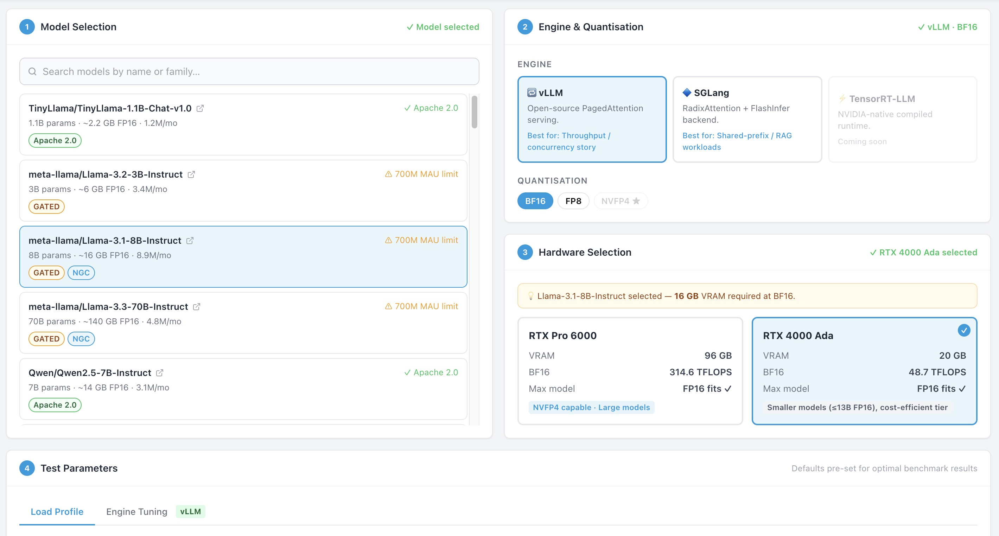
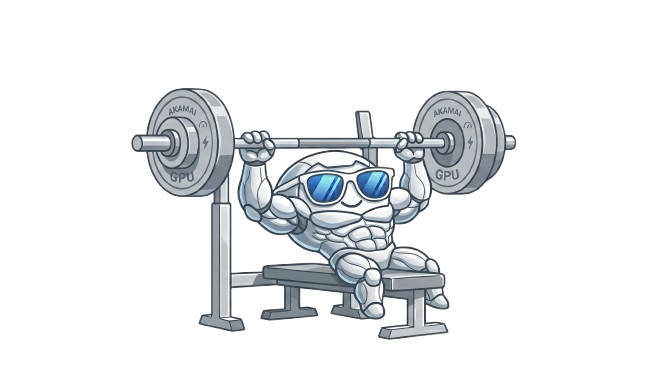
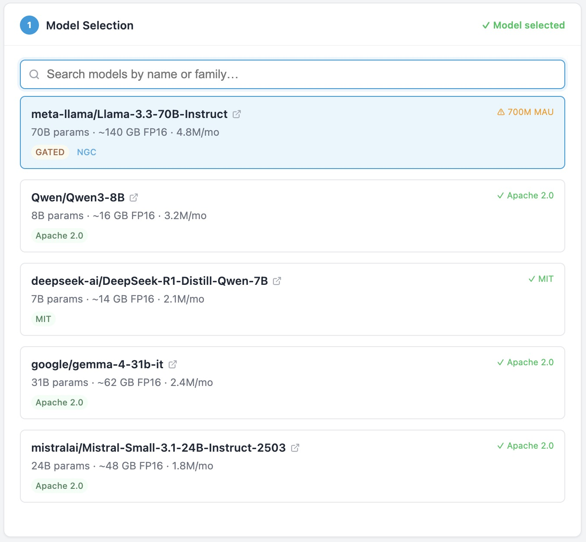
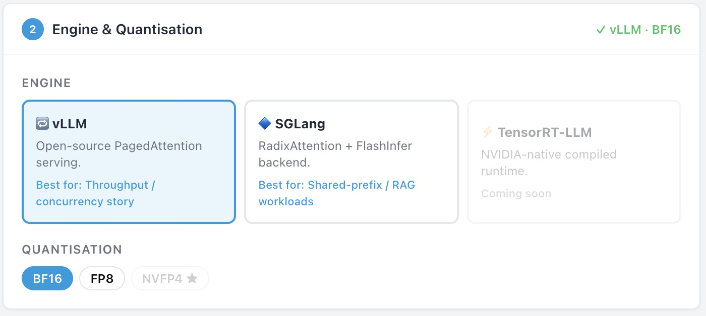
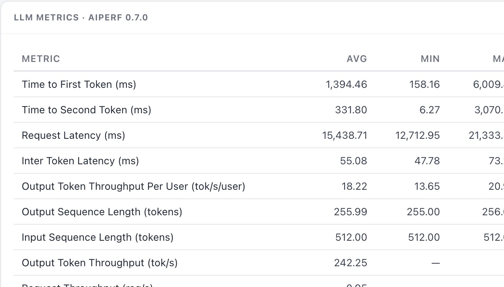
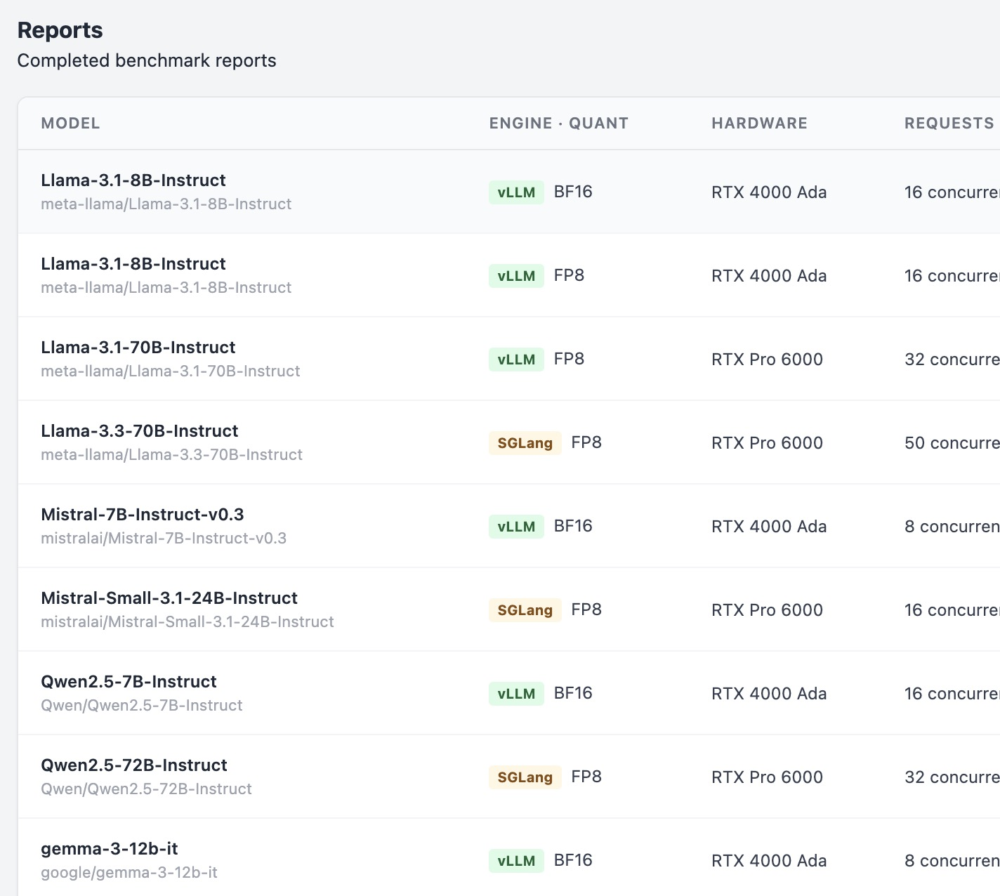

Generate reproducible LLM inference benchmark reports on Akamai cloud GPUs. Purpose-built for Akamai field teams.
Request Access →

Customer: "Have you benchmarked model X on your GPUs?"
You: "Yes."
Same methodology, same tooling, every time — for any model.
Real performance numbers on Akamai hardware before a prospect commits.
A shared repository that teams can access, reuse, and build on.
Purpose-built tooling ensures GPU benchmark capacity is used efficiently and accessibly.

Search and benchmark popular open-source models — LLaMA, Qwen, Mistral, Gemma, and more. New models are added continuously as they gain adoption.

Choose between vLLM for throughput-optimised workloads and SGLang for shared-prefix and RAG scenarios. Tune engine parameters to match your customer's exact use case.


All completed benchmarks land in a shared library. Browse, compare, and export PDF reports — no need to re-run jobs others already ran.
Select your model, inference engine, quantisation format, GPU tier, and load profile in a guided 4-step wizard.
Submit the job. AKAbench deploys it on a GPU node, starts the inference server, and runs AIPerf automatically.
View throughput and latency charts. Export a polished PDF to share directly with your customer.
Benchmarks run on Akamai cloud GPUs.
Ideal for smaller models and cost-sensitive customer conversations.
Supports NVFP4 quantisation. Recommended for flagship model benchmarks and large-context workloads.
Please reach out to me via Webex and I'll get you set up.
AKAbench is available to internal Akamai teams only. Reach out to get started.
Request Access